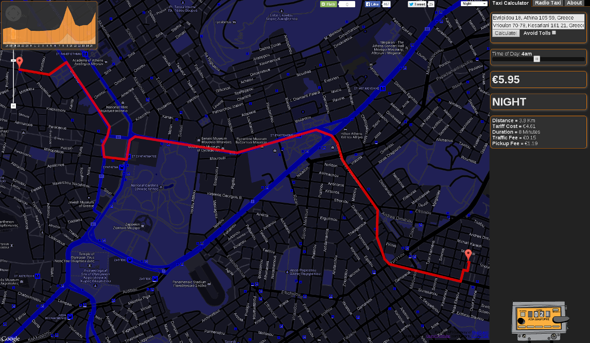
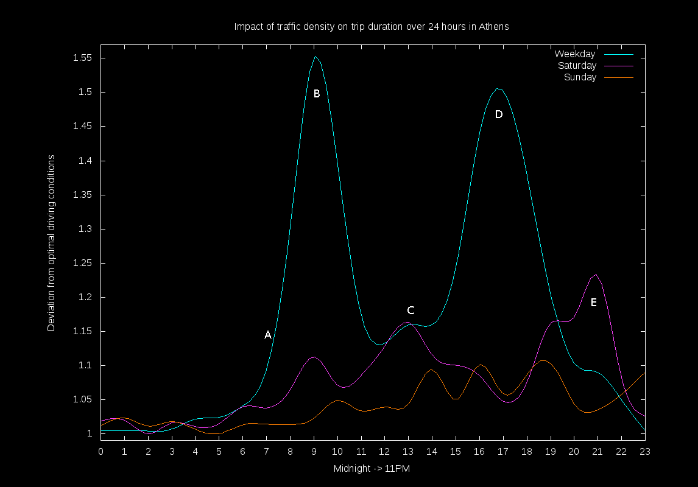

Since September last year my taxi calculator app has been used by 44 thousand people looking to estimate the cost of their taxi journey in Athens. After a lot of feedback, last weekend I decided to re-implement it and introduce some new features.
The first version of the app had many limitations. It was only intended to work in Athens, it did not include "Tariff 2" in any calculations (double tariff for part of trip outside of city limits), it did not include the new flat rate 35-50 euro fare to and from Athens airport and Athens centre (specifically inside the Daktylios Athinon), and most importantly, did not take into account the fare incurred when the taxi is stationary (in traffic or lights).
Finally, it turned out that the google directions API I was using to calculate the possible taxi route did not work for the center/daktylios ring of Athens. This is because the centre of Athens operates a traffic restriction policy based on the day of week and parity of number plate, and due to its complication, google or teleatlas have marked the area as pedestrian only. As a consequence, google directions do not work at all for Athens centre and are sub optimal for the Athens greater area because of the diversion from the pedestrian only zone.
The new version now has the following features:
The original app was 100% client side (Javascript) - this is great for scalability, since the client does all of the work, however for the new version I wanted to pull most of the calculation server-side - specifically because the new features require a number of geometry calculations and quite a lot of geospatial data.
Eventually I ended up with this stack:
The MapQuest open directions API is a very good open routing service exposed via JSON/XML and makes use of data from the open street map project. The documentation and support is top-quality enabling me to make use of this web service in my app in next to no time.
The most significant addition to the taxi app is the inclusion of a traffic model for Athens and Thessaloniki. As a separate side project I have been working on a forecasting/simulation system for traffic flow which will eventually make use of an implementation I started a few years ago of "NEAT" (Neuro Evolution of Augmenting Topologies) as a forecasting technique.
For now, the model is very crude and is based on the assumption that the deviation from the average optimal driving speed (average driving speed with no-traffic) is very strongly correlated with trip duration. To model this in the taxi app, I use a matrix of weights which represent the deviation from optimal driving speed for an averaged 24 hour period in Athens.
During the hours between midnight and ~5am, the traveling conditions are "optimal", meaning average driving speed will be ≥ the average of speed limits inside the city - this has a weight of "1" (no deviation). During the first peak/rush hour, the weight is 1.55, or according to my assumption, total (moving) traveling time will be 1.55 times more (on average during weekdays) and total (stationary) time/traffic lights/gridlock with also be 1.55 time more (likely).
The graph above shows my weights which have been derived from actual observations. The 5 labels (A to E) are very interesting and say quite a lot about life in Athens (or indeed many cities). It is obvious that in (A) congestion is much higher from ~7am, peaking exactly at 9am (B). Between 8 and 9, the situation rapidly deteriorates - People are going to work, and evidently the majority of the population want to be there at 9. The sudden peak is due to the size of the city - it is small, you can go quite far in 1 hour and most people will leave for work during this period. Label (C) shows that during weekdays most people will be at work and some perhaps heading out for lunch. Label (C) also shows a peak during saturday, which is probably people who are working on saturdays (having again arrived at 9 - smaller peak below B) and are leaving earlier at around 1pm. Label (C) also marks an interesting point - At around ~2pm the traffic suddenly starts to rise again up until it's peak at ~5pm. This long-tailed rise shows that unlike the sharp 9am peak, where most people want to be at work for 9, the time for people leaving work is obviously quite variable, but peaks around 5pm and long-tails off to settle down at around 8pm. Perhaps I'm in the wrong job because most people i know (working as programmers in Athens) have 0 chance of leaving work before 8. The final label (E) shows a peak of Saturday traffic at around 9pm - tsiporisation :)